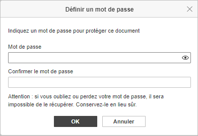

Protéger des formulaires PDF avec un mot de passe
Vous pouvez protéger vos formulaires PDF avec un mot de passe afin que tous les coauteurs puissent d'accéder en mode d'édition. On peut modifier ou supprimer le mot de passe, le cas échéant.
Il n'est pas possible de réinitialiser un mot de passe perdu ou oublié. Gardez vos mots de passe dans un endroit sécurisé.
Définir un mot de passe
- passez à l'onglet Fichier de la barre d'outils supérieure et sélectionnez l'option Protéger. Cliquez sur le bouton Ajouter un mot de passe afin d'ouvrir la fenêtre,
ou passer à l'onglet Protection et cliquer sur l'icône Chiffrer.
- définissez le mot de passe dans le champ Mot de passe et validez-le dans le champ Confirmer le mot de passe au-dessous. Cliquez surpour afficher ou masquer les caractères lors de la saisie,

- Cliquez sur OK pour valider.
Pour ouvrir le formulaire avec les permissions d'accès complet, l'utilisateur doit saisir ce mot de passe.
Modifier le mot de passe
- passez à l'onglet Fichier de la barre d'outils supérieure et sélectionnez l'option Protéger. Cliquez sur le bouton Ajouter un mot de passe afin d'ouvrir la fenêtre,
ou passer à l'onglet Protection et cliquer sur l'icône Chiffrer.
- définissez le nouveau mot de passe dans le champ Mot de passe et validez-le dans le champ Confirmer le mot de passe au-dessous. Cliquez surpour afficher ou masquer les caractères lors de la saisie.
- cliquez sur OK.
Supprimer le mot de passe
- passez à l'onglet Fichier de la barre d'outils supérieure,
- choisissez l'option Protéger,
- cliquez sur le bouton Supprimer un mot de passe.
Protéger un formulaire PDF
- passez à l'onglet Protection,
- cliquez sur le bouton Protéger formulaire,
- le formulaire sera disponible uniquement en mode de remplissage. Cliquez sur ce bouton encore une fois pour désactiver ce mode-ci.